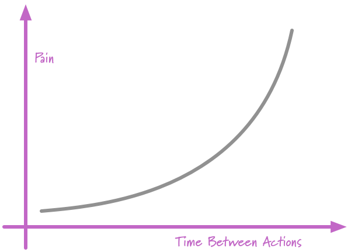

Sebastian Hanß and Selina Baldauf
24 May, 2020
follow the conventions of your research community / lab
clear separation of data, method and output
specify the computational environment
adapt R package stucture for your research compendia
R CMD check)Mavick et al. 2018
testthat package (Hadley Wickham)“If it hurts, do it more often” (Martin Fowler)

smaller changes are easier to handle
get quick and frequent feedback
early bug detection
constant availability of current code version
if you have to revert the codebase due to bugs you won’t lose that much
However, can be time consuming and might be overkill for small or solo projects
usethis packagetestthat